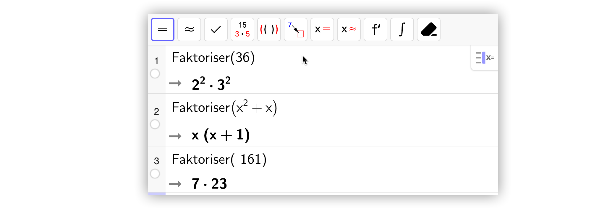
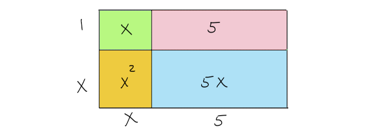

Faktorisering og kvadratsetninger
Contents
Faktorisering og kvadratsetninger¶
Målet her er at du skal
vite hva verbet «å faktorisere» betyr
kunne faktorisere enkle heltall
kunne faktorisere flerledda uttrykk ved å finne felles faktorer i alle ledd
kunne benytte kvadratsetningene til utregning av kvadrater
vite hva et fullstendig kvadrat er
Her er noen typiske uttrykk faktorisert:
\[a^2+b \cdot a=a \cdot (a+b)\]\[x^3+x^2y=x^2(x+y) \]
Faktorisering med CAS¶

Til høyre ser du hvordan GeoGebra CAS (CAS står for Computer Algebra System) faktoriserer. Kommandoen er bygd opp slik:
Faktoriser («her er det som skal faktoriseres»).
Resultatet gir et faktorisert tall eller uttrykk som svar.
Se på eksemplene nedenfor, og prøv å forklar hva som skjer, og hvorfor resultatet er en faktorisering.
Eksempler
Faktoriser(39) \(=3 \cdot 13\)
Faktoriser(a²⋅b+ a ⋅ c) =\(a \cdot (a \cdot b+c) \)
Faktoriser(157) \(=157\)
Faktoriser(x³⋅ y²+x²⋅y ) \(=x^2 \cdot y \cdot (x \cdot y+1)\)
Faktorisering¶
I videoen under vil du få en introduksjon til emnet faktorisering
Ofte ønsker vi å skrive uttrykk så enkelt som mulig. I videoen nedenfor viser vi hvordan du kan bruke faktorisering til «å pynte på» uttrykk.
Oppgave 1
Hva er feil?
En elev ønsker å skrive uttrykket \(\dfrac{x^2y-xy^2}{xy^2}\) så enkelt som mulig og gjorde følgende:
Hva er det eleven gjør feil?
Oppgave 2
Bruk figuren nedenfor til å faktorisere \( x^2+6x+5\).

Tips: Skrive opp arealet til rektangelet på to måter!
Oppgave 3
Nedenfor ser du en faktorisering av uttrykket \( x^2-2x-3\). Hva må tallet \(a\) være for at dette skal stemme?
Før du går videre skal du gjøre oppgavene nedenfor. De kan du kladde på et ark og notere deg svarene. Er det en sammenheng mellom svarene du finner? Om du har regnet riktig vil du finne ut senere i leksjonen. Kanskje vil du se en raskere måte å regne det ut på også?
Oppgave 4
Regn ut
a) \((2+a)^2 \)
b) \((x+1)^2 \)
Første kvadratsetning¶
Den første kvadratsetningen:
Videoen nedenfor forklarer den første kvadratsetningen.
Bruk av første kvadratsetning¶
Finn fram papir og blyant og løs denne oppgaven.
Oppgave 5
Bruk første kvadratsetning til å regne ut \((x+3)^2\).
I denne videoen forklares hvordan den første kvadratsetningen kan benyttes til å regne ut \((x+3)^2\).
Andre kvadratsetning¶
I denne videoen presenteres den andre kvadratsetningen:
Andre kvadratsetning
Finn fram papir og blyant og løs denne oppgaven. Svaret, og en forklaring, vil du få i neste video.
Oppgave 6
Bruk andre kvadratsetning til å regne ut \((2x-3)^2\).
Konjugatsetningen¶
Oppgave 7
Bruk papir og blyant og regn ut
I denne videoen forklares den tredje kvadratsetningen eller konjugatsetiningen:
Kladd oppgaven under før du får en forklaring i neste video.
Oppgave 8
Bruk den tredje kvadratsetningen til å regne ut \((2x+3)(2x-3)\).
Kvadratsetningene¶
De tre kvadratsetningene
\((a+b)^2 = a^2+2ab +b^2\)
\((a-b)^2 = a^2-2ab + b^2\)
\((a+b)(a-b) = a^2-b^2\)